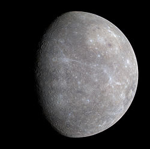
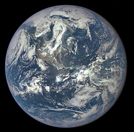

Венера

Вторая по удалённости от Солнца планета Солнечной системы, наряду с Меркурием, Землёй и Марсом принадлежит к семейству планет земной группы. Названа в честь древнеримской богини любви Венеры.

Меркурий Ближайшая к Солнцу планета Солнечной системы, наименьшая из планет земной группы. Названа в честь древнеримского бога торговли — быстрого Меркурия, поскольку она движется по небесной сфере быстрее других планет.
Вторая по удалённости от Солнца планета Солнечной системы, наряду с Меркурием, Землёй и Марсом принадлежит к семейству планет земной группы. Названа в честь древнеримской богини любви Венеры.

Третья по удалённости от Солнца планета Солнечной системы. Пятая по диаметру, массе и плотности среди всех планет и крупнейшая среди планет земной группы.

Является планетой земного типа, так как имеет тонкую атмосферу и поверхность, напоминающую как кратеры Луны, так и пустыни, долины, вулканы и полярные льды Земли. На планете Марс обнаружен самый высокий вулкан Солнечной системы.
| Планета | Размер | Удалённость от Солнца | Год открытия | Вот так |
|---|---|---|---|---|
| Меркурий | 1000 | |||
| Венера | ||||
| Земля | 9900 | |||
| Марс | ||||
| Вот так | ||||